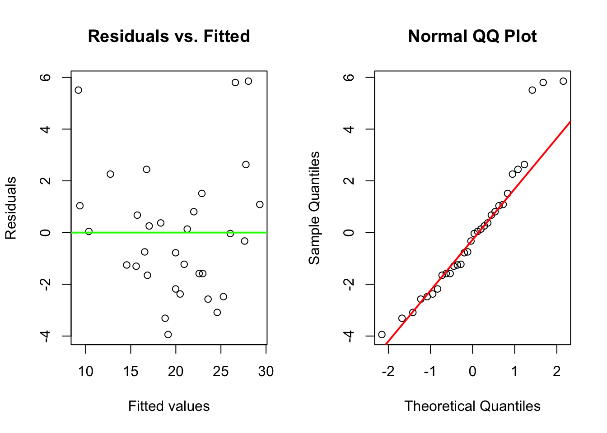
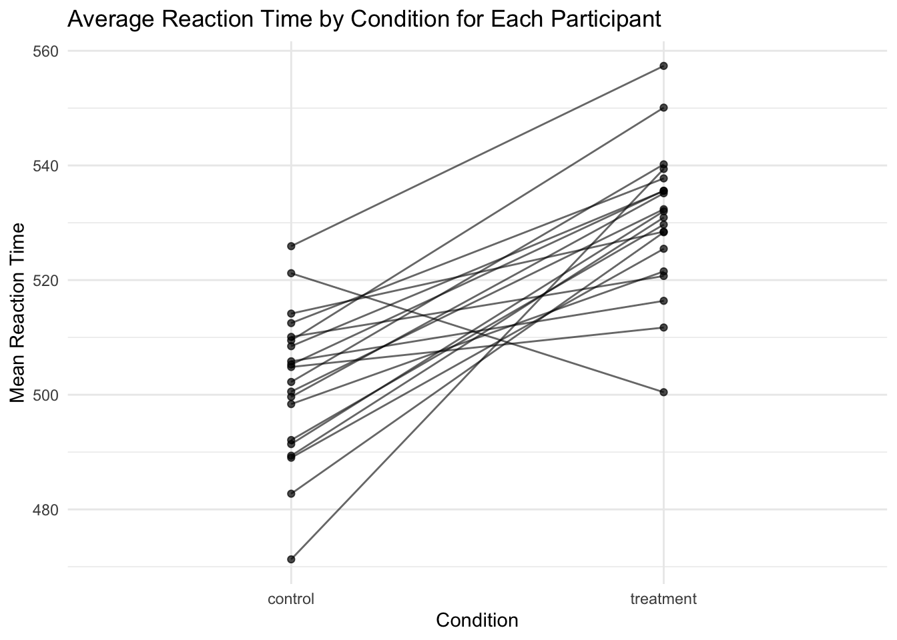
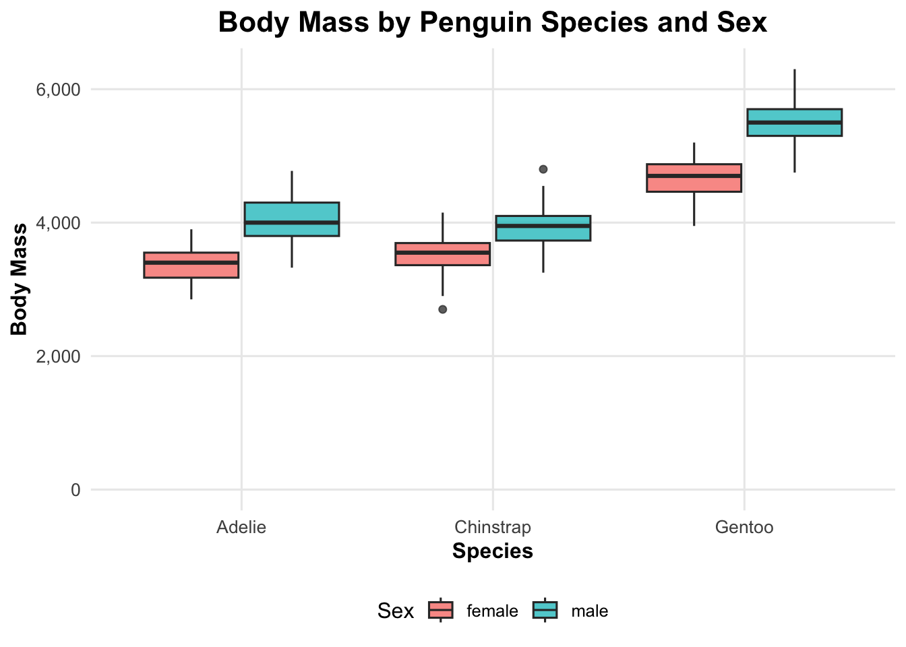
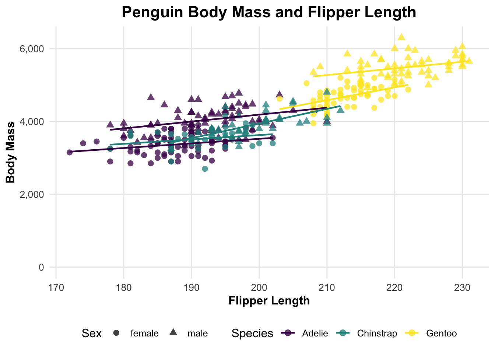

data(mtcars)model_mpg <-lm(mpg ~ wt + hp, data = mtcars)summary(model_mpg)
Call:
lm(formula = mpg ~ wt + hp, data = mtcars)
Residuals:
Min 1Q Median 3Q Max
-3.941 -1.600 -0.182 1.050 5.854
Coefficients:
Estimate Std. Error t value Pr(>|t|)
(Intercept) 37.22727 1.59879 23.285 < 2e-16 ***
wt -3.87783 0.63273 -6.129 1.12e-06 ***
hp -0.03177 0.00903 -3.519 0.00145 **
---
Signif. codes: 0 '***' 0.001 '**' 0.01 '*' 0.05 '.' 0.1 ' ' 1
Residual standard error: 2.593 on 29 degrees of freedom
Multiple R-squared: 0.8268, Adjusted R-squared: 0.8148
F-statistic: 69.21 on 2 and 29 DF, p-value: 9.109e-12
The intercept, 37.23, is the model’s predicted mpg when both weight and horsepower are zero, but this is not very meaningful in a real-world setting because no car has zero weight or zero horsepower. The coefficient for wt is -3.88, after accounting for horsepower, cars that are 1000 pounds heavier are expected to have about 3.88 fewer miles per gallon. The coefficient for hp is -0.0318, after accounting for weight, higher horsepower is also linked to slightly lower mpg. Both variables are significant, so weight and horsepower both help explain differences in fuel efficiency.
1.1(b)
par(mfrow =c(1, 2))plot(fitted(model_mpg), residuals(model_mpg),xlab ="Fitted values",ylab ="Residuals",main ="Residuals vs. Fitted")abline(h =0, col ="green", lwd =2)qqnorm(residuals(model_mpg),main ="Normal QQ Plot")qqline(residuals(model_mpg), col ="red", lwd =2)

par(mfrow =c(1, 1))
The residuals vs. fitted plot shows that the residuals are mostly scattered around the zero line, so the linear model looks reasonably appropriate for predicting mpg from wt and hp. There is no strong curved pattern, which means the linearity assumption is mostly acceptable, although the spread is not perfectly even and a few observations have larger residuals. The normal QQ plot also looks fairly reasonable because most points follow the red reference line in the middle of the plot. However, there are some deviations in the upper tail because a few cars have higher mpg than the model predicts. Overall, the diagnostic plots do not show serious problems.
1.1 (c)
library(car)
Loading required package: carData
vif(model_mpg)
wt hp
1.766625 1.766625
The VIF values for both wt and hp are about 1.77, which is low. There’s not a strong multicollinearity problem between weight and horsepower in this model. Although heavier cars may also tend to have more horsepower, the two variables are not overlapping enough to make the regression estimates unstable. Since the VIF values are well below common cutoff values such as 5 or 10, I would not be concerned about multicollinearity here.
1.1 (d)
interaction <-lm(mpg ~ wt *hp, data =mtcars)summary(interaction)
Call:
lm(formula = mpg ~ wt * hp, data = mtcars)
Residuals:
Min 1Q Median 3Q Max
-3.0632 -1.6491 -0.7362 1.4211 4.5513
Coefficients:
Estimate Std. Error t value Pr(>|t|)
(Intercept) 49.80842 3.60516 13.816 5.01e-14 ***
wt -8.21662 1.26971 -6.471 5.20e-07 ***
hp -0.12010 0.02470 -4.863 4.04e-05 ***
wt:hp 0.02785 0.00742 3.753 0.000811 ***
---
Signif. codes: 0 '***' 0.001 '**' 0.01 '*' 0.05 '.' 0.1 ' ' 1
Residual standard error: 2.153 on 28 degrees of freedom
Multiple R-squared: 0.8848, Adjusted R-squared: 0.8724
F-statistic: 71.66 on 3 and 28 DF, p-value: 2.981e-13
anova(model_mpg, interaction)
Analysis of Variance Table
Model 1: mpg ~ wt + hp
Model 2: mpg ~ wt * hp
Res.Df RSS Df Sum of Sq F Pr(>F)
1 29 195.05
2 28 129.76 1 65.286 14.088 0.0008108 ***
---
Signif. codes: 0 '***' 0.001 '**' 0.01 '*' 0.05 '.' 0.1 ' ' 1
The interaction term wt:hp has a very small p-value, about 0.00081, so adding the interaction gives a better fit than the original model with only wt and hp as separate predictors. The ANOVA comparison also gives a p-value of about 0.00081, showing that the interaction model reduces the residual variation more than the main-effects model. The R^2 increases from about 0.8724 to about 0.8848, so the interaction model explains more of the variation in mpg.
The boxplot shows a clear difference in V1 cell thickness between benign and malignant tumors. The benign tumors mostly have lower cell thickness values, with the median around 3, while the malignant tumors have much higher values, with the median around 8. The malignant group also has a wider spread, so cell thickness varies more among malignant cases than benign cases. There is a little overlap between the two groups, but the overall pattern shows malignant tumors tend to have thicker cells than benign tumors.
The logistic regression results show that V1, V2, and V3 are all related to higher odds of a tumor being malignant. All three coefficients are positive and have very small p-values, so higher values of these cell features are linked to malignancy after adjusting for the other variables. The odds ratios are about 1.81 for V1, 1.89 for V2, and 2.06 for V3. This means that each one-unit increase in these predictors raises the odds of malignancy, with V3 having the largest odds ratio among the 3.
Using the 0.5 cutoff, the model correctly classified 430 benign tumors and 219 malignant tumors. It misclassified 20 malignant tumors as benign and 14 benign tumors as malignant. The overall accuracy is about 95.0%, so the model correctly classified most tumors. The sensitivity is about 91.6%, which means the model correctly identified most of the malignant tumors. The specificity is about 96.8%, so the model was very good at correctly recognizing benign tumors.
For a new tumor observation with V1 = 5, V2 = 4, and V3 = 4, the model predicts a malignancy probability of about 67%. Since this value is above the 0.5 cutoff, the model would classify this tumor as malignant.
For my 3 model comparison, the fixed-effects-only model had the lowest AIC (6361.58) and BIC (6374.77), so it performed best among the 3 models in this simulated dataset. The participant random-intercept model had slightly higher AIC and BIC, and adding item random intercepts made the model even more complex without improving fit. The likelihood ratio test comparing the participant-only random intercept model to the participant-plus-item model had a p-value of 1, so the item random effect did not improve the model. The “boundary/singular fit” warning also shows that the random-effect variance was estimated very close to zero, so the mixed model was not really adding useful information here. Based on these results, I would choose the simpler fixed-effects model for this simulated dataset.
c)
summary(m1_fixed)
Call:
lm(formula = reaction_time ~ condition, data = reaction_data)
Residuals:
Min 1Q Median 3Q Max
-140.94 -30.56 -0.29 32.61 160.33
Coefficients:
Estimate Std. Error t value Pr(>|t|)
(Intercept) 501.722 2.793 179.629 < 2e-16 ***
conditiontreatment 28.733 3.950 7.274 1.1e-12 ***
---
Signif. codes: 0 '***' 0.001 '**' 0.01 '*' 0.05 '.' 0.1 ' ' 1
Residual standard error: 48.38 on 598 degrees of freedom
Multiple R-squared: 0.08129, Adjusted R-squared: 0.07976
F-statistic: 52.91 on 1 and 598 DF, p-value: 1.098e-12
The fixed effect results show that the average reaction time in the control condition is about 501.72 ms. The treatment coefficient is 28.73, so participants in the treatment condition had reaction times about 28.73 ms higher than the control condition on average. This treatment effect is statistically significant with a very small p-value, so the treatment condition is clearly associated with longer reaction time in this simulated dataset. The participant ICC is about 0.00032, which is almost zero. This means that almost none of the total variation in reaction time comes from stable differences between participants.
In my results, the likelihood ratio test comparing these two models gives a very large pvalue, about 0.987, so the random-slope model does not improve the fit. The AIC and BIC are also higher for the random-slope model (AIC = 6367.5, BIC = 6393.9) than for the participant random-intercept model (AIC = 6363.6, BIC = 6381.2). Based on these results, I would keep the simpler random intercept model rather than the random slope model.
e)
library(dplyr)
Attaching package: 'dplyr'
The following object is masked from 'package:MASS':
select
The following object is masked from 'package:car':
recode
The following objects are masked from 'package:stats':
filter, lag
The following objects are masked from 'package:base':
intersect, setdiff, setequal, union
library(ggplot2)participant_means <- reaction_data %>%group_by(participant, condition) %>%summarise(mean_reaction_time =mean(reaction_time), .groups ="drop")ggplot(participant_means,aes(x = condition, y = mean_reaction_time, group = participant)) +geom_point(alpha =0.7) +geom_line(alpha =0.6) +labs(title ="Average Reaction Time by Condition for Each Participant",x ="Condition",y ="Mean Reaction Time" ) +theme_minimal()

The plot connects each participant’s average reaction time from the control condition to the treatment condition. Each line represents one participant, so an upward line shows that the participant had a higher average reaction time under treatment, while a downward line shows a lower average reaction time under treatment. Using participant averages makes the plot easier to read because it removes the repeated item-level points and focuses on the overall within-participant change between conditions.
3.1
library(ggplot2)theme_penguin <-function(base_size =12) {theme_minimal(base_size = base_size) +theme(plot.title =element_text(size =16, face ="bold", hjust =0.5),axis.title =element_text(size =12, face ="bold"),axis.text =element_text(size =10),legend.position ="bottom",panel.grid.minor =element_blank(),strip.text =element_text(size =12, face ="bold") )}
3.2
library(palmerpenguins)
Attaching package: 'palmerpenguins'
The following objects are masked from 'package:datasets':
penguins, penguins_raw
penguins_mass <- penguins %>%filter(!is.na(species),!is.na(body_mass_g),!is.na(sex) )ggplot(penguins_mass,aes(x = species,y = body_mass_g,fill = sex)) +geom_boxplot(alpha =0.75,position =position_dodge(width =0.8)) +scale_y_continuous(limits =c(0, NA),labels = scales::comma ) +labs(title ="Body Mass by Penguin Species and Sex",x ="Species",y ="Body Mass",fill ="Sex" ) +theme_penguin()

3.4
penguins_complex <- penguins %>%filter(!is.na(species),!is.na(bill_length_mm),!is.na(flipper_length_mm),!is.na(body_mass_g),!is.na(sex) )ggplot( penguins_complex,aes(x = flipper_length_mm,y = body_mass_g,color = species,shape = sex )) +geom_point(alpha =0.75, size =2.5) +geom_smooth(method ="lm", se =FALSE, linewidth =0.8) +scale_color_viridis_d() +scale_y_continuous(limits =c(0, NA),labels = scales::comma ) +labs(title ="Penguin Body Mass and Flipper Length",x ="Flipper Length",y ="Body Mass",color ="Species",shape ="Sex" ) +theme_penguin()
`geom_smooth()` using formula = 'y ~ x'

The plot shows penguins with longer flippers generally have higher body mass. Adelie and Chinstrap penguins overlap more, although Chinstrap penguins appear slightly higher in flipper length for some observations. Gentoo penguins stand out from the other species because they tend to have both longer flippers and heavier body mass. The shape of the points separates sex, and males generally appear heavier than females within the same species.
Part 4
a)
library(shiny)
Warning: package 'shiny' was built under R version 4.5.2
library(ggplot2)ui <-fluidPage(titlePanel("Mtcars Linear Model Explorer"),sidebarLayout(sidebarPanel(selectInput(inputId ="predictor",label ="Choose a predictor variable:",choices =c("wt", "hp", "disp", "drat"),selected ="wt" )),mainPanel(plotOutput("scatter_plot"),verbatimTextOutput("model_summary"))))
b)
server <-function(input, output) { model_fit <-reactive({ formula_text <-paste("mpg ~", input$predictor)lm(as.formula(formula_text), data = mtcars) }) output$scatter_plot <-renderPlot({ggplot(mtcars, aes(x = .data[[input$predictor]], y = mpg)) +geom_point(size =2.5, alpha =0.75) +geom_smooth(method ="lm", se =TRUE) +labs(title =paste("MPG vs.", input$predictor),x = input$predictor,y ="Miles per gallon" ) +theme_minimal() }) output$model_summary <-renderPrint({summary(model_fit()) })}
c)
ui <-fluidPage(titlePanel("Mtcars Linear Model Explorer"),sidebarLayout(sidebarPanel(selectInput(inputId ="predictor",label ="Choose a predictor variable:",choices =c("wt", "hp", "disp", "drat"),selected ="wt" ),checkboxInput(inputId ="show_line",label ="Show regression line",value =TRUE ) ),mainPanel(plotOutput("scatter_plot"),verbatimTextOutput("model_summary") ) ))server <-function(input, output) { model_fit <-reactive({ formula_text <-paste("mpg ~", input$predictor)lm(as.formula(formula_text), data = mtcars) }) output$scatter_plot <-renderPlot({ p <-ggplot(mtcars, aes(x = .data[[input$predictor]], y = mpg)) +geom_point(size =2.5, alpha =0.75) +labs(title =paste("MPG vs.", input$predictor),x = input$predictor,y ="Miles per gallon" ) +theme_minimal()if (isTRUE(input$show_line)) { p <- p +geom_smooth(method ="lm", se =TRUE) } p }) output$model_summary <-renderPrint({summary(model_fit()) })}shinyApp(ui = ui, server = server)
Shiny applications not supported in static R Markdown documents
# I added a checkbox that lets the user choose whether to show the regression line.# This makes the app easier to explore because the user can first look at the raw data points# and then turn on the fitted line when they want to see the overall linear trend.
I used parallel::detectCores() to check the number of available CPU cores. The logical core count includes hyperthreaded or virtual cores, while the physical core count refers to the actual processor cores. I set safe_cores to one less than the number of logical cores so that parallel tasks can run faster without using every core on the computer.
For 500 samples, the sequential median time was about 10.59 ms, while the parallel version took about 115.22 ms. For 1000 samples, sequential took about 18.10 ms, compared with 111.33 ms for parallel. For 2000 samples, sequential took about 39.20 ms, while parallel took about 111.95 ms. The sequential bootstrap was faster than the parallel version for all three bootstrap sizes.